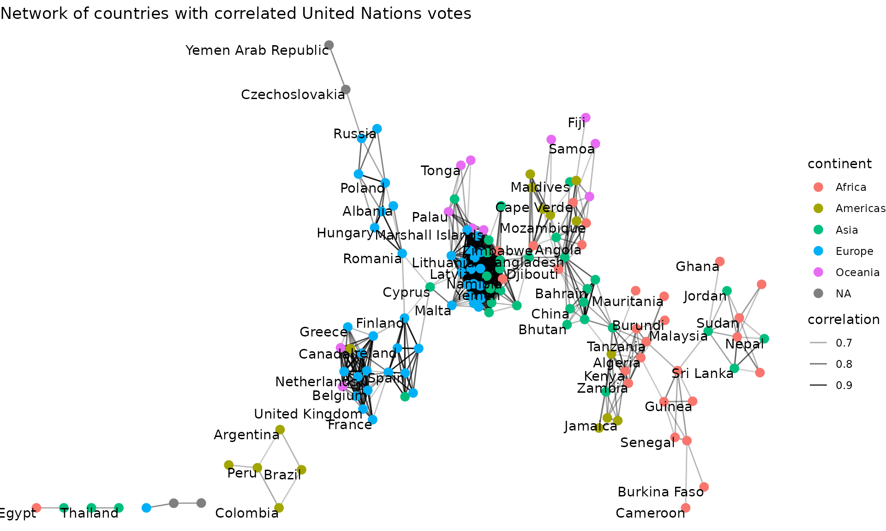

United Nations Voting Correlations
David Robinson
2022-09-13
Source:vignettes/united_nations.Rmd
united_nations.RmdHere we’ll examine an example application of the widyr package, particularly the pairwise_cor and pairwise_dist functions. We’ll use the data on United Nations General Assembly voting from the unvotes package:
## # A tibble: 869,937 × 4
## rcid country country_code vote
## <dbl> <chr> <chr> <fct>
## 1 3 United States US yes
## 2 3 Canada CA no
## 3 3 Cuba CU yes
## 4 3 Haiti HT yes
## 5 3 Dominican Republic DO yes
## 6 3 Mexico MX yes
## 7 3 Guatemala GT yes
## 8 3 Honduras HN yes
## 9 3 El Salvador SV yes
## 10 3 Nicaragua NI yes
## # … with 869,927 more rowsThis dataset has one row for each country for each roll call vote. We’re interested in finding pairs of countries that tended to vote similarly.
Pairwise correlations
Notice that the vote column is a factor, with levels (in order) “yes”, “abstain”, and “no”:
levels(un_votes$vote)## [1] "yes" "abstain" "no"We may then be interested in obtaining a measure of country-to-country agreement for each vote, using the pairwise_cor function.
library(widyr)
cors <- un_votes %>%
mutate(vote = as.numeric(vote)) %>%
pairwise_cor(country, rcid, vote, use = "pairwise.complete.obs", sort = TRUE)
cors## # A tibble: 39,800 × 3
## item1 item2 correlation
## <chr> <chr> <dbl>
## 1 Slovakia Czechia 0.989
## 2 Czechia Slovakia 0.989
## 3 Lithuania Germany 0.978
## 4 Germany Lithuania 0.978
## 5 Lithuania Estonia 0.975
## 6 Estonia Lithuania 0.975
## 7 Lithuania Latvia 0.973
## 8 Latvia Lithuania 0.973
## 9 Slovakia Slovenia 0.972
## 10 Slovenia Slovakia 0.972
## # … with 39,790 more rowsWe could, for example, find the countries that the US is most and least in agreement with:
## # A tibble: 199 × 3
## item1 item2 correlation
## <chr> <chr> <dbl>
## 1 United States United Kingdom 0.575
## 2 United States Canada 0.570
## 3 United States Israel 0.546
## 4 United States Australia 0.514
## 5 United States Netherlands 0.513
## 6 United States Luxembourg 0.504
## 7 United States Belgium 0.498
## 8 United States Italy 0.470
## 9 United States Japan 0.462
## 10 United States France 0.459
## # … with 189 more rows## # A tibble: 199 × 3
## item1 item2 correlation
## <chr> <chr> <dbl>
## 1 United States Belarus -0.331
## 2 United States Cuba -0.313
## 3 United States Czechoslovakia -0.275
## 4 United States Egypt -0.262
## 5 United States Russia -0.261
## 6 United States Syria -0.261
## 7 United States India -0.241
## 8 United States Afghanistan -0.191
## 9 United States Iraq -0.189
## 10 United States Indonesia -0.188
## # … with 189 more rowsThis can be particularly useful when visualized on a map.
if (require("maps", quietly = TRUE) &&
require("fuzzyjoin", quietly = TRUE) &&
require("countrycode", quietly = TRUE) &&
require("ggplot2", quietly = TRUE)) {
world_data <- map_data("world") %>%
regex_full_join(iso3166, by = c("region" = "mapname")) %>%
filter(region != "Antarctica")
US_cors %>%
mutate(a2 = countrycode(item2, "country.name", "iso2c")) %>%
full_join(world_data, by = "a2") %>%
ggplot(aes(long, lat, group = group, fill = correlation)) +
geom_polygon(color = "gray", size = .1) +
scale_fill_gradient2() +
coord_quickmap() +
theme_void() +
labs(title = "Correlation of each country's UN votes with the United States",
subtitle = "Blue indicates agreement, red indicates disagreement",
fill = "Correlation w/ US")
}Visualizing clusters in a network
Another useful kind of visualization is a network plot, which can be created with Thomas Pedersen’s ggraph package. We can filter for pairs of countries with correlations above a particular threshold.
if (require("ggraph", quietly = TRUE) &&
require("igraph", quietly = TRUE) &&
require("countrycode", quietly = TRUE)) {
cors_filtered <- cors %>%
filter(correlation > .6)
continents <- tibble(country = unique(un_votes$country)) %>%
filter(country %in% cors_filtered$item1 |
country %in% cors_filtered$item2) %>%
mutate(continent = countrycode(country, "country.name", "continent"))
set.seed(2017)
cors_filtered %>%
graph_from_data_frame(vertices = continents) %>%
ggraph() +
geom_edge_link(aes(edge_alpha = correlation)) +
geom_node_point(aes(color = continent), size = 3) +
geom_node_text(aes(label = name), check_overlap = TRUE, vjust = 1, hjust = 1) +
theme_void() +
labs(title = "Network of countries with correlated United Nations votes")
}
Choosing the threshold for filtering correlations (or other measures of similarity) typically requires some trial and error. Setting too high a threshold will make a graph too sparse, while too low a threshold will make a graph too crowded.